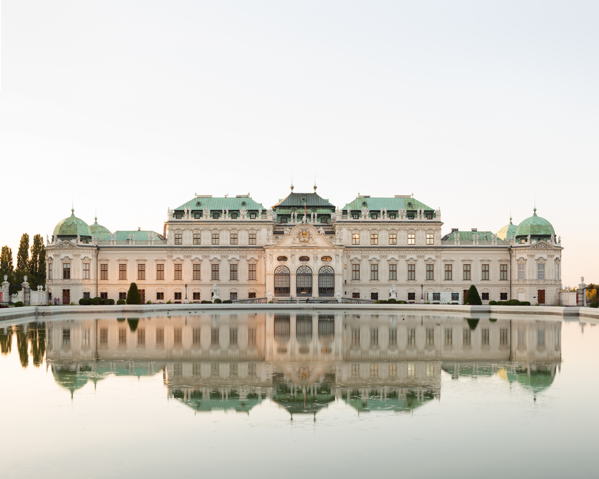
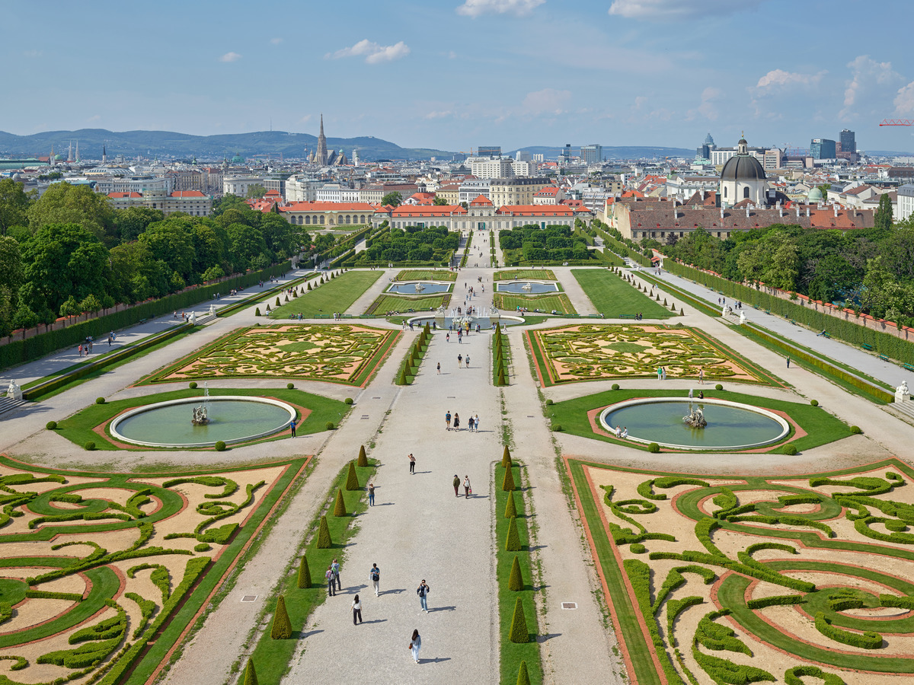

Belvedere-Becs


Itt található alkotásai
- A csók
- Judith
- Sonja Knips portréja
- Fritza Riedler portréja
- Ádam és Éva
- Virágzó mákok
- Napraforgó
- Kertészeti táj napraforgókkal
- Kamar kastély az Attersee-ton
- Anya két gyermekkel (Család)
→